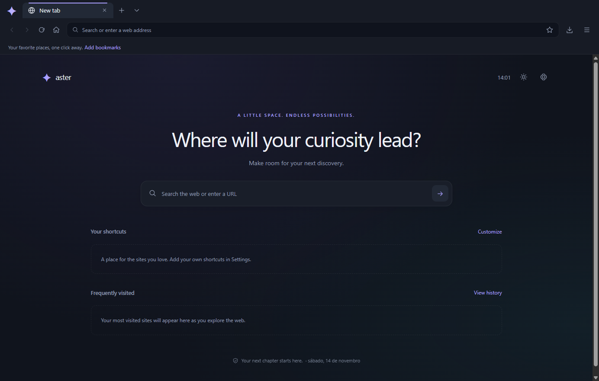
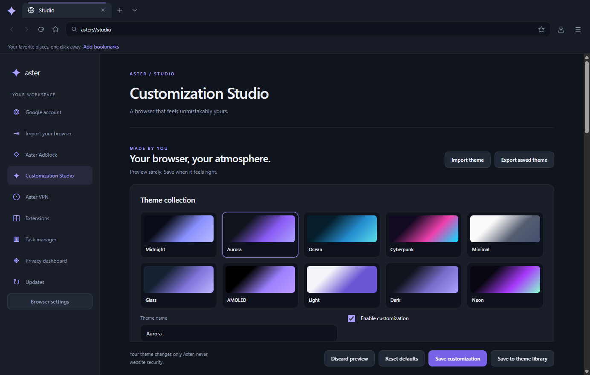

Follow your curiosity
Independent tabs, bookmarks with folders, history, downloads, and keyboard shortcuts. Normal tabs and preferences can return when you reopen Aster.
A browser that makes room for you. Explore the real web, shape your workspace, and keep your controls close.
Windows 10 / 11 · x64 · Unsigned preview release

Chromium rendering under the hood. Aster's own interface on top. Real pages, real tabs, and browser tools designed to stay within reach.
Independent tabs, bookmarks with folders, history, downloads, and keyboard shortcuts. Normal tabs and preferences can return when you reopen Aster.
Private sessions, cookie and permission controls, plus a privacy dashboard. Private browsing does not make you anonymous to websites or networks.
EasyList-compatible network blocking with custom rules and site allowlists. Filter lists must be downloaded and kept up to date; no blocker guarantees every ad or threat is removed.
Choose a preset, tune your colors, set a local wallpaper, or style supported interface surfaces with validated CSS. Preview before saving, and share themes as data—not executable scripts.
Ten presets · Theme import/export · Local configuration backup

Actual preview build screenshot—not a product mockup.
Aster can control compatible saved Windows VPN connections. It does not include a VPN service, server subscription or kill switch. Traffic coverage and DNS depend on Windows routing and the provider.
Official OAuth through your system browser, with OS-encrypted credential storage. Developer OAuth registration and consent are required. This is not Chrome Sync or automatic Google website sign-in.
Explicitly choose a source profile or bookmark export. Supported migration preserves folders and reports skipped entries. Aster does not extract protected browser passwords or cookies.
ASTER 5.0.0 adds a Password Manager (OS-encrypted vault), full right-click context menus, reading mode, QR codes, and screenshot tools, on top of the existing 3.x feature set. Download from the GitHub release. Unsigned preview; SHA-256: ff8dec79fc1583f39733b924812c3461db775a31ff0a9a813d7106196d6a150b (122,200,847 bytes). 173 automated tests pass.
The second Android artifact brings ASTER 5.0 parity: a Keystore-encrypted Password Manager, long-press context menus, a Security Center dashboard, page capture, and a tab manager with reopen-closed. Download from the GitHub release. Package app.aster.mobile.debug, Android 9+, INTERNET permission only, debug-certificate signed. SHA-256: 8f22b17a33301eefb9c55d0624b38527bcdb03ea17b8bfad4b9781a2f7c0fda3 (2,748,664 bytes). Not yet device-tested; 15/15 JVM tests pass.
The iOS project (Swift/WKWebView, XcodeGen, XCTest suite) mirrors the same security architecture and is ready for Xcode. Nothing has been compiled: building, testing, and signing require a Mac with Xcode and the owner's Apple developer identity. There is no IPA, TestFlight link, or App Store listing. All three codebases follow the same parity rules; iOS statuses are documented honestly in each project's context files.
Yes. It is a Windows desktop application built with Electron and Chromium, using isolated web-content views rather than a website pretending to be a browser.
No. The supplied preview installer is unsigned. Windows may show an unknown-publisher warning. Do not disable operating-system security protections; verify your source and checksum before choosing to run a download.
That depends on the chosen Windows VPN connection. Split tunnels protect only selected routes. Aster shows routing scope but does not independently guarantee leak protection or supply VPN servers.
No. Only unpacked extensions using Electron-supported APIs are candidates, and compatibility must be tested individually. Chrome Web Store installation is not included.
A public support contact has not been configured. If you received this build directly, use your existing communication channel with its publisher. Contact details must be added before public distribution.
Review the release details, download the Windows preview, and make it your own.
View Windows download →